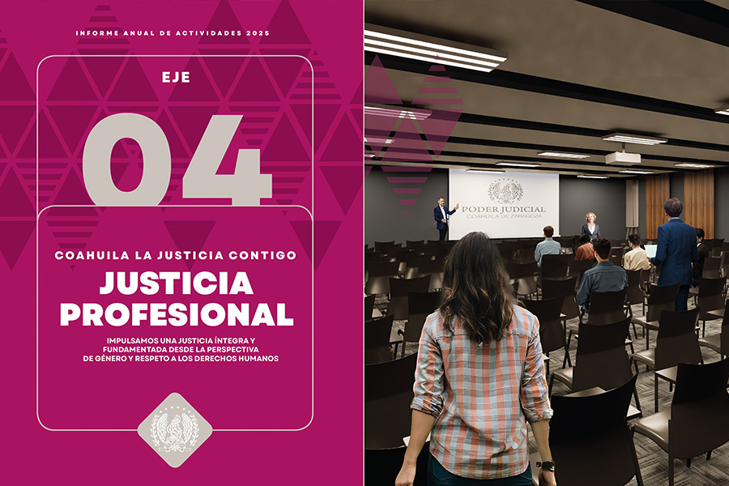
Eje 4 Justicia Profesional
IMPULSAMOS UNA JUSTICIA ÍNTEGRA Y FUNDAMENTADA DESDE LA PERSPECTIVA DE GÉNERO Y RESPETO A LOS DERECHOS HUMANOS
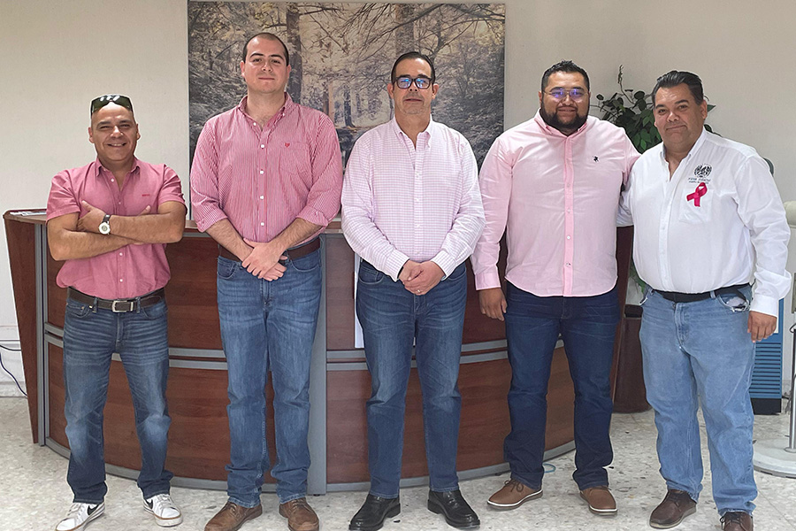
En el Poder Judicial de Coahuila concebimos la justicia como un servicio público que debe ejercerse con legalidad, eficiencia y profesionalismo, pero también con sensibilidad, cercanía y profundo respeto a las personas. Nuestro compromiso va más allá de la aplicación de la ley: buscamos que cada decisión contribuya a la construcción de una sociedad más justa, incluyente y respetuosa de los derechos humanos.
Para lograrlo, impulsamos una institución sólida y confiable, sustentada en una estructura judicial moderna, íntegra y orientada al bien común. Estamos convencidos de que una justicia de calidad inicia con personas preparadas y comprometidas con la carrera judicial.
Por ello, fortalecemos de manera permanente la capacitación, especialización y desarrollo de las habilidades de nuestro personal, a través del Instituto de Especialización Judicial, promoviendo la mejora continua, la ética profesional y la excelencia en el servicio.
En el ámbito de formación de nivel de licenciatura, se dio continuidad al programa de colaboración con distintas instituciones para ofrecer la oportunidad de estudiar la carrera de Derecho con un programa accesible a trabajadores y servidores públicos de diversas dependencias. Esta oferta académica se complementó con seminarios, talleres, cursos y conferencias sobre temas especializados, perspectiva de género, justicia penal, justicia para adolescentes, derecho civil y familiar, y gestión administrativa. Dichas acciones estuvieron dirigidas tanto a personal judicial como a personas externas a la institución.
Todo este esfuerzo ha estado orientado a consolidar un personal jurisdiccional preparado, sensible y comprometido con su función social, capaz de responder con excelencia a las demandas de la sociedad coahuilense.
De manera paralela, apostamos por mecanismos que permitan resolver conflictos de manera ágil y pacífica, acercando soluciones oportunas a la ciudadanía. En este contexto, el Centro de Medios Alternos de Solución de Controversias desempeña un papel fundamental al promover la mediación como una vía efectiva para la conciliación, el diálogo y la construcción de acuerdos, evitando la judicialización innecesaria de los conflictos.
En atención a la reforma a la Ley General de Medios Alternativos de Solución de Controversias, durante este año impartimos un diplomado para fortalecer competencias en la resolución pacífica de controversias y la promoción de una cultura de paz.
De forma transversal, trabajamos para garantizar que el acceso a la justicia se dé en condiciones de igualdad. La protección de los derechos humanos, la perspectiva de género y la atención a los grupos históricamente vulnerados constituyen pilares que orientan nuestras políticas públicas y acciones institucionales. A través de la Unidad de Derechos Humanos e Igualdad de Género, fortalecemos la cultura de la legalidad y promovemos entornos judiciales seguros, equitativos y libres de discriminación.
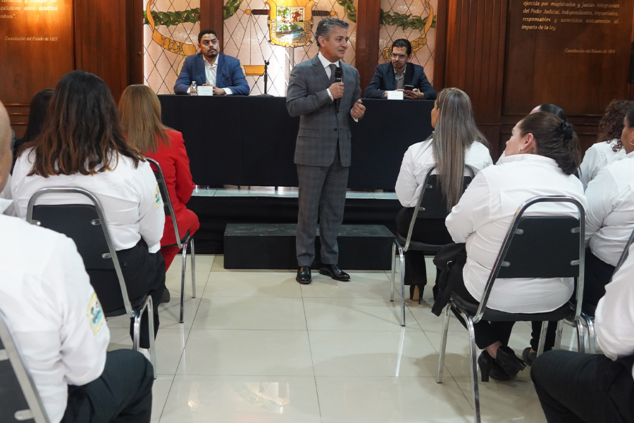
Conscientes de la importancia de formar ciudadanía desde edades tempranas, impulsamos iniciativas dirigidas a niñas y niños, reconociéndolos como sujetos de derechos y acercándolos al concepto de justicia. Estas acciones reflejan nuestra convicción de que un Poder Judicial cercano también educa, previene y genera paz social.
Asimismo, conscientes de las barreras que impiden que las personas con discapacidad puedan ejercer plenamente sus derechos, diseñamos diversas estrategias orientadas a garantizar su acceso efectivo a la justicia. Destaca la creación de un Protocolo de Actuación para Garantizar el Acceso a la Justicia de las Personas con Discapacidad, una herramienta que promueve un sistema judicial inclusivo, basado en derechos humanos y que sensibiliza al personal judicial sobre las barreras existentes.
Reafirmamos así nuestro compromiso con una justicia que sirva a las y los coahuilenses con profesionalismo, humanidad y pleno respeto a la dignidad de todas las personas.
Instituto de Especialización Judicial
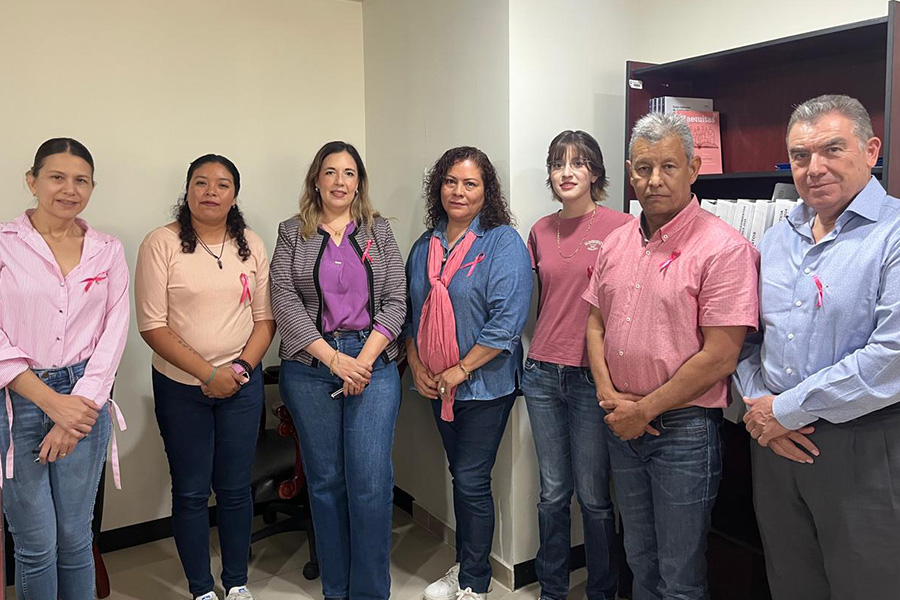
La fortaleza de un Poder Judicial no se construye únicamente a partir de las resoluciones que emite, sino también de su capacidad para responder a las nuevas demandas sociales y la evolución del entorno jurídico mediante un personal preparado y especializado.
Bajo esta premisa, durante 2025, en el Poder Judicial de Coahuila, a través del Instituto de Especialización Judicial, impulsamos la formación continua de quienes integran la institución, fortaleciendo competencias profesionales y promoviendo el desarrollo permanente de habilidades orientadas a optimizar el desempeño de la función judicial e impartir una justicia cercana y de calidad.
Como parte de estas acciones, implementamos distintos mecanismos y procedimientos para garantizar la calidad de los programas académicos y de sus procesos formativos, asegurando que la oferta sea pertinente, oportuna, incluyente y accesible.
Durante el ejercicio judicial 2025 se consolidaron seminarios, talleres, cursos y conferencias en temas especializados que responden a las necesidades reales del servicio judicial, como derecho para adolescentes, derechos de la infancia, el nuevo Código Nacional de Procedimientos Civiles y Familiares, perspectiva de género, gestión judicial, manejo archivístico y justicia penal. Estas acciones estuvieron dirigidas tanto a personas operadoras de justicia como a litigantes, ampliando el impacto del proceso formativo y fortaleciendo el trabajo institucional de manera colectiva.
En el periodo que se reporta, llevamos a cabo 13 actividades académicas, con una participación de dos mil 786 personas, de las cuales, mil 724 pertenecen al Poder Judicial, 308 a otras dependencias gubernamentales y 750 son litigantes, lo que evidencia el alcance y la relevancia de nuestros programas.
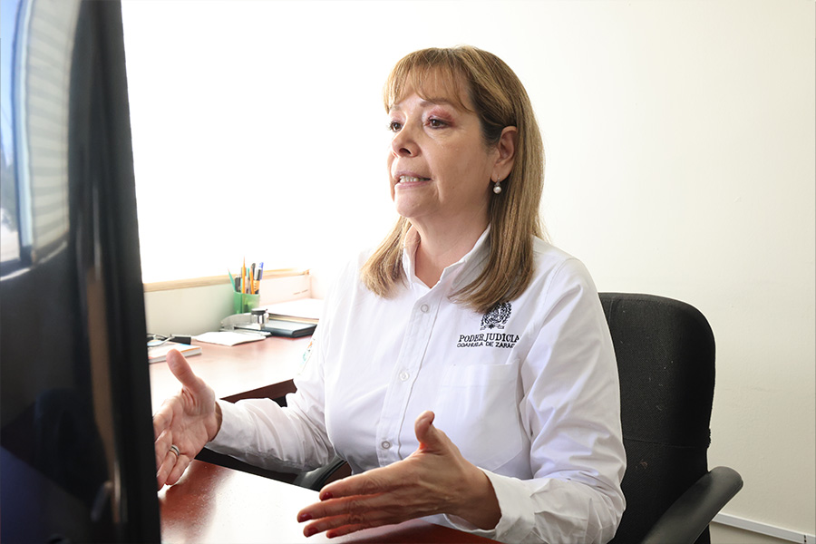
Oferta académica especializada y continua
El compromiso con una justicia de calidad exige que quienes la integran cuenten con las herramientas necesarias para desempeñar su labor con profesionalismo, sensibilidad y conocimiento actualizado. Por ello, promovemos una oferta permanente de formación y especialización que responde a las necesidades del personal y de todas las personas que participan en el sistema de justicia.
Esta labor se fortalece mediante alianzas estratégicas con instituciones públicas, organismos judiciales, universidades y organizaciones de la sociedad civil, lo que permite enriquecer los contenidos, diversificar las modalidades de capacitación y ampliar el alcance de los programas formativos.
Gracias a este trabajo colaborativo, avanzamos hacia un modelo de preparación continua que impulsa un Poder Judicial más competente, abierto al aprendizaje y comprometido con el servicio a las y los coahuilenses.
Bajo ese tenor, impartimos el diplomado especializado en el Sistema Integral de Justicia Penal para Adolescentes y en los Derechos de la Infancia en los sistemas de justicia civil y familiar, este programa tuvo una duración de 90 horas distribuidas en 10 módulos, y contó con la participación de 291 personas.
Con este diplomado fortalecemos el compromiso con una justicia especializada que privilegie la reintegración social y la no criminalización, al desarrollar habilidades para conducir procedimientos en los que se involucren adolescentes e infancias, priorizando su bienestar y participación activa.
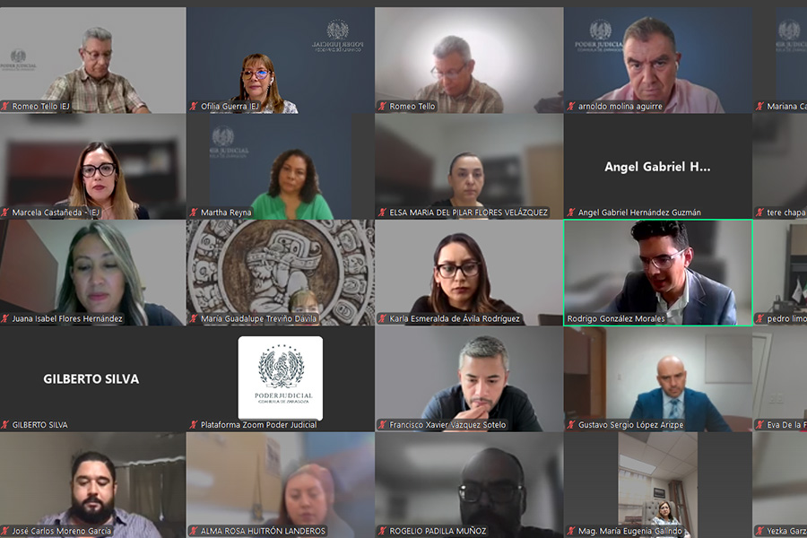
De igual manera, desarrollamos el curso de capacitación y actualización dirigido a secretarias y secretarios del Poder Judicial, en el que 223 personas fortalecieron sus conocimientos en temas procesales, de gestión judicial, ética, responsabilidad administrativa y uso de nuevas tecnologías.
El fortalecimiento institucional también incluyó acciones formativas dirigidas al adecuado manejo archivístico. A través de las conferencias sobre el ciclo vital del documento y ética en los archivos, 177 personas servidoras públicas, entre ellas personas juzgadoras, secretarias, directores, subdirectores y personal responsable de archivo en áreas jurisdiccionales, no jurisdiccionales y administrativas del Poder Judicial, reforzaron los criterios para el control documental y las responsabilidades éticas vinculadas con la gestión institucional de la información.
El enfoque de derechos humanos y la perspectiva de género son pilares fundamentales en el modelo de atención que brinda el Poder Judicial de Coahuila a las y los justiciables.
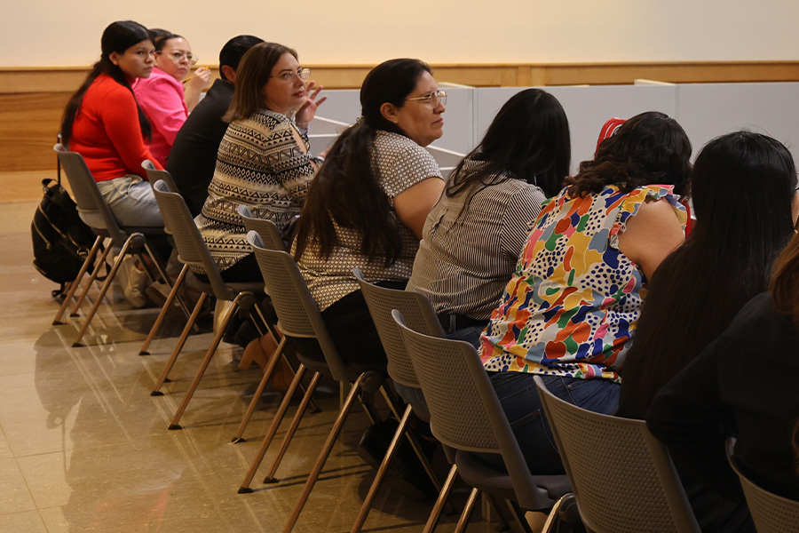
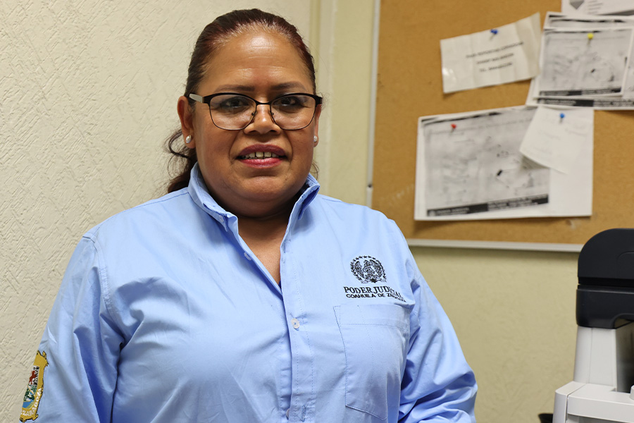
Por esa razón, en alianza con la Suprema Corte de Justicia de la Nación y en coordinación con la Unidad de Derechos Humanos e Igualdad de Género, desarrollamos el curso autogestivo “La Aplicación de la Perspectiva de Género en la Administración e Impartición de Justicia”, con la finalidad de desarrollar una comprensión de las desigualdades estructurales entre los operadores del sistema de justicia, y avanzar hacia modelos de atención con enfoque de derechos humanos, orientados al acceso equitativo a la justicia para todas las personas.
Asimismo, con el propósito de reforzar la actualización en materia penal, realizamos tres jornadas de capacitación en las que participaron 45 autoridades jurisdiccionales.
En dichas jornadas se abordaron temas como la reparación integral del daño, la valoración de pruebas, la argumentación jurídica, las resoluciones de la Corte Interamericana y las excluyentes del delito.
La inminente entrada en vigor del nuevo Código Nacional de Procedimientos Civiles y Familiares en Coahuila exigió diseñar una ruta clara y responsable que permitiera llevarlo a la práctica con solidez. Por ello, realizamos la segunda edición del diplomado virtual sobre los temas clave del nuevo modelo, desde la oralidad procesal hasta la justicia digital, con una respuesta de 223 personas participantes, incluyendo servidoras y servidores judiciales y personas litigantes.
Este programa académico permitió fortalecer las competencias técnicas indispensables para el desempeño idóneo de quienes operan el sistema de justicia civil y familiar,facilitando una comprensión sólida e integral del nuevo modelo procesal, porque combina la teoría y práctica garantizando un análisis integral, que les permitirá enfrentar con éxito los retos que plantea la aplicación de este código en la labor diaria.
Por otro lado, continuamos con el programa de Licenciatura en Derecho en línea, desarrollado en colaboración estratégica con la Facultad de Contaduría y Administración en la Unidad Torreón de la Universidad Autónoma de Coahuila, el Gobierno del Estado de Coahuila de Zaragoza, el Congreso del Estado y la Auditoría Superior del Estado, durante el primer semestre del año se graduaron 53 estudiantes de la segunda generación, y actualmente están cursando la tercera, cuarta y quinta generación, un total de 217 personas.
Esta sinergia ha permitido ampliar las oportunidades de formación profesional y fortalecer el acceso a la educación superior para el personal del Poder Judicial, quienes demuestran su capacidad para alcanzar la excelencia académica a través del estudio autónomo, la disciplina y el aprovechamiento de las herramientas tecnológicas.
En esa misma línea, en colaboración con la Universidad La Salle, llevamos a cabo dos periodos de estadías universitarias, en las que 37 estudiantes realizaron prácticas en juzgados civiles, familiares y penales, integrándose a las dinámicas reales del trabajo jurisdiccional y fortaleciendo su preparación profesional a través del contacto directo con los procesos judiciales.
En conjunto, estas actividades reflejan el compromiso del Poder Judicial en la generación de conocimiento y promoción del acceso a la justicia, a través de espacios de diálogo, aprendizaje y colaboración.
Tabla 46. Personas Capacitadas por el Instituto de Especialización Judicial
| Materia | Actividades | Personas 2025 | |||||||||||
|---|---|---|---|---|---|---|---|---|---|---|---|---|---|
| PJECZ | M | H | Otras | M | H | Litigantes | M | H | Total | Total | Total | ||
| dependencias | mujeres | hom res | |||||||||||
| Capacitación Básica | 3 | 339 | 204 | 139 | 35 | 15 | 20 | 0 | 0 | 0 | 219 | 159 | 378 |
| CEMASC | 0 | 26 | 19 | 7 | 24 | 19 | 5 | 116 | 75 | 41 | 113 | 53 | 166 |
| Civil y Familiar | 1 | 76 | 60 | 16 | 25 | 17 | 8 | 171 | 93 | 78 | 170 | 102 | 272 |
| DDHH y Género | 1 | 346 | 252 | 94 | 0 | 0 | 0 | 0 | 0 | 0 | 252 | 94 | 346 |
| Especializada y Carrera Judicial | 6 | 748 | 444 | 304 | 196 | 114 | 82 | 344 | 176 | 168 | 734 | 554 | 1,288 |
| Penal | 2 | 189 | 124 | 65 | 28 | 16 | 12 | 119 | 74 | 45 | 214 | 122 | 336 |
| Total | 13 | 1,724 | 1,103 | 625 | 308 | 181 | 127 | 750 | 418 | 332 | 1,702 | 1,084 | 2,786 |
Fuente: Instituto de Especialización Judicial. Poder Judicial del Estado de Coahuila de Zaragoza. 2025.
Destacamos también, que durante los meses de marzo a junio, ofrecimos un taller de actualización en las destrezas de conducción de audiencias, bajo la supervisión de la Jueza en retiro Mtra. María Antonieta Leal Cota, mediante visitas presenciales en los diversos distritos judiciales.
Este taller permitió que, a partir de la observación de la forma en que las juezas y los jueces en materia penal conducen una audiencia, se les proporcionara retroalimentación orientada a destacar sus fortalezas y a identificar áreas de oportunidad, con el objetivo de optimizar los tiempos de desahogo de las audiencias y fortalecer los conocimientos de las y los juzgadores.
Seminario Judicial
Con el objetivo de fortalecer el desempeño institucional de las personas que integran el Poder Judicial, llevamos a cabo el Seminario Judicial 2025, orientado a la presentación y análisis del programa de trabajo de la Comisión de Transición y del funcionamiento del Órgano de Administración Judicial y del Tribunal de Disciplina Judicial, en el que participaron activamente 125 personas juzgadoras y personal directivo, en el marco de la implementación de la Reforma Judicial.
En este sentido, reflexionamos sobre las buenas y malas prácticas identificadas desde la perspectiva de la Defensoría Pública y la Visitaduría General, lo que nos permitió realizar un análisis crítico del quehacer jurisdiccional y de los principales retos en materia de gestión, ética e integridad judicial.
Como parte de las actividades formativas, desarrollamos el taller “Perfil de la persona juzgadora y magistrada de Coahuila”, con el propósito de consolidar un perfil judicial basado en la ética, la eficiencia, la transparencia y el servicio a la ciudadanía. Dicho taller fue impartido por la Mtra. Rebeca Fernández Calleja, consultora estratégica en Cambio Sistémico y Transformación de Sistemas de Justicia.
Las exposiciones realizadas nos permitieron consolidar una visión de la persona juzgadora centrada en los principios de ética pública, integridad, transparencia de los actos y responsabilidad en el ejercicio del cargo.
Capacitación del Instituto Estatal de Defensoría Pública
Durante 2025, en el Instituto Estatal de Defensoría Pública impulsamos diversas acciones de capacitación y actualización dirigidas a los asesores y defensores públicos, con el objetivo de fortalecer sus habilidades, destrezas y conocimientos jurídicos, garantizando así una atención eficiente, ética y de calidad a la ciudadanía.
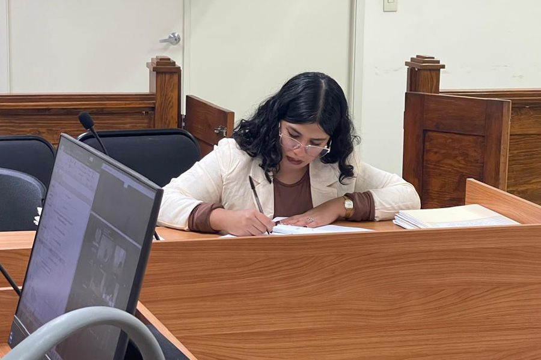
Dichas capacitaciones se realizaron a través de la gestión e intercambio de programas académicos con diversas instancias como la Casa de la Cultura Jurídica de la Suprema Corte de Justicia de la Nación con sede en Saltillo, y con el trabajo coordinado con el Instituto de Especialización Judicial de este poder público, derivado de lo anterior, se capacitó a un total de 571 personas.
Tabla 47. Capacitación al personal del IEDP
| Curso | Modalidad | Participantes |
|---|---|---|
| Curso-Taller: La Importancia de los Defensores Públicos como Garantes de los Derechos Humanos | Presencial | 28 |
| Diplomado “Justicia Penal para Adolescentes, con enfoque al CNPCYF” | Virtual | 39 |
| Diplomado Autogestivo: La Aplicación de la Perspectiva de Género en la Administración e Impartición de Justicia | Virtual | 84 |
| Diplomado “Código Nacional de Procedimientos Civiles y Familiares” | Virtual | 56 |
| Curso “El Acecho” | Presencial | 114 |
| Curso “Calidad en el Servicio” | Presencial | 90 |
| Curso “Ciclo Vital del Documento y Ética en los Archivos” | Virtual | 45 |
| Curso “Técnicas de Interrogación” | Virtual | 7 |
| Curso “Primeros Auxilios” | Presencial | 13 |
| Curso “Salud Mental” | Presencial | 5 |
| Conferencia “Justicia Social y Reforma Judicial” | Presencial | 12 |
| Conferencia “Grafoscopía y Análisis Técnico” | Virtual | 69 |
| Ciclo de Conferencias de Actualización Judicial Impartidas por la Suprema Corte de Justicia de la Nación. | Virtual | 9 |
| Total | 571 |
Fuente: Instituto Estatal de la Defensoría Pública. Poder Judicial del Estado de Coahuila de Zaragoza. 2025.
Las principales acciones formativas fueron en temas encaminados al enfoque garantista y la protección efectiva de los derechos fundamentales; la atención especializada y el respeto al interés superior de la niñez y adolescencia, en las materias penal, civil y familiar; la actualización en la reciente reforma normativa en la materia civil y familiar; y en el fortalecimiento de competencias de atención ciudadana, ética profesional y mejora continua.
Tabla 48. Capacitación a la ciudadanía en general
| Conferencia | Modalidad | Duración | Participantes |
|---|---|---|---|
| Trámites y servicios del IEDP | Presencial | 1 hora | 49 |
| Los Derechos Económicos, Sociales, Culturales y Ambientales de las Niñas, Niños y Adolescentes | Presencial | 1 hora | 32 |
| Total | 81 |
Fuente. Instituto Estatal de Defensoría Pública. Poder Judicial del Estado de Coahuila de Zaragoza. 2025.
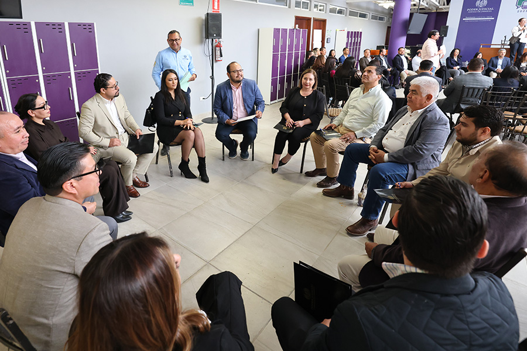
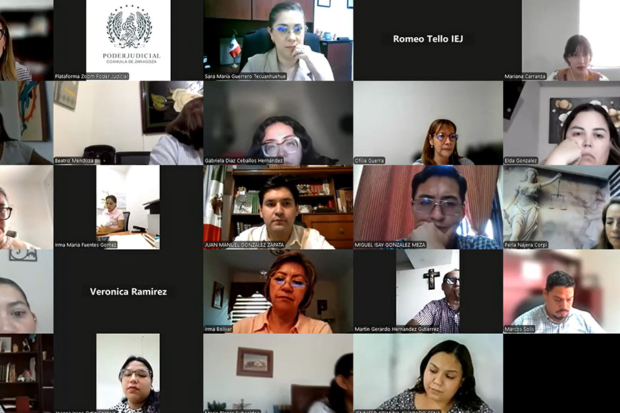
Capacitación en Medios Alternos de Solución de Controversias
El acceso a la justicia se fortalece con la consolidación de la mediación y de los demás medios alternos de solución de controversias, por esa razón, con el propósito de armonizar criterios y acciones con lo establecido en el Código Nacional de Procedimientos Civiles y Familiares, así como con la Ley General de Medios Alternativos de Solución de Controversias, y los Lineamientos para la Capacitación de Personas Facilitadoras aprobados por el Consejo Nacional de Mecanismos Alternativos, impartimos el diplomado en MASC para consolidar competencias en la resolución pacífica de controversias y la promoción de una cultura de paz sustentada en la transformación positiva del conflicto.
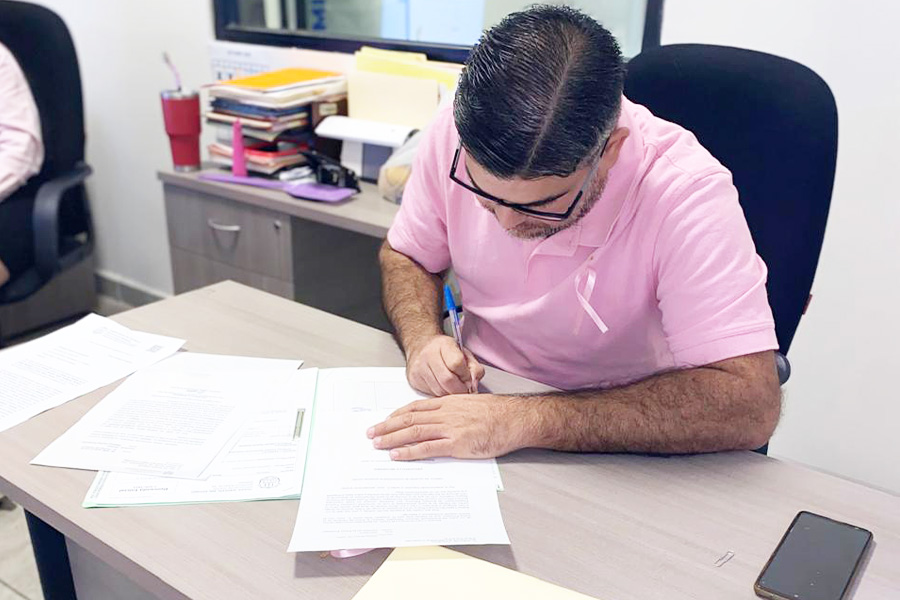
A través de diversas sesiones en las que se realizaron simulaciones de casos y análisis de experiencias prácticas, las 146 personas participantes desarrollaron habilidades técnicas y capacidades especializadas para facilitar el diálogo, gestionar emociones, reconocer daños y promover acuerdos restaurativos.
Con este proceso formativo contribuimos a consolidar un modelo de justicia más humano, colaborativo y orientado a restaurar el tejido social, posicionando a los mecanismos alternativos como instrumentos efectivos para la construcción de la paz, que ayudan a alejarse de los paradigmas tradicionales que fomentan el litigio como único mecanismo para resolver conflictos.
Unidad de Derechos Humanos e Igualdad de Género
La Unidad de Derechos Humanos e Igualdad de Género, adscrita a la Secretaría Técnica y de Planeación, es la instancia encargada de promover la observancia de los derechos humanos, y de incorporar de manera transversal la perspectiva de género en las funciones jurisdiccionales y administrativas del Poder Judicial del Estado de Coahuila de Zaragoza. Su labor busca que la impartición y administración de justicia, así como el diseño e implementación de programas institucionales, se realicen bajo un enfoque que coloque a las personas al centro de todas las decisiones y actuaciones judiciales.
Como parte de nuestras acciones sustantivas, impulsamos la sensibilización en estas materias, en 2025, en colaboración con el Ministerio de Justicia de Canadá y Nosotras Para Ellas A.C., impartimos una capacitación sobre el delito de acecho.
Dicha formación se desarrolló en módulos diferenciados, dirigidos específicamente al personal del Instituto Estatal de Defensoría Pública, del Centro de Medios Alternos y Solución de Controversias, y del Centro de Evaluación Psicosocial, conforme a sus respectivas competencias y ámbitos de atención. Esto con el objetivo de fortalecer sus capacidades para identificar el delito de acecho, brindar una atención adecuada a las personas involucradas y mejorar la coordinación interinstitucional en su abordaje.
Igualmente, en conjunto con la Unidad de Conocimiento Científico y Derechos Humanos de la Suprema Corte de Justicia de la Nación, impartimos el curso autogestivo “La aplicación de la perspectiva de género en la administración e impartición de justicia”, con el objetivo de contribuir en la prevención y erradicación de la violencia contra las mujeres, en la promoción de una justicia más incluyente y equitativa, y en la construcción de confianza en la ciudadanía, asegurando que cada resolución responda a criterios de igualdad y no discriminación.
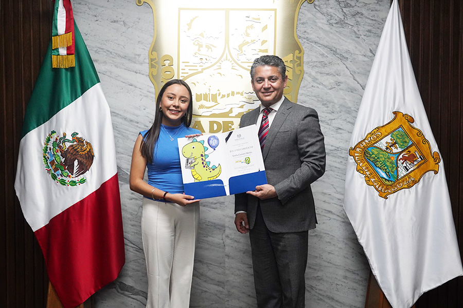
Este curso se realizó en dos ediciones y fue completado por 374 personas del ámbito jurisdiccional y administrativo de este poder público.
Por otra parte, con el objetivo de garantizar una justicia más humana, accesible e inclusiva, creamos el Protocolo de Actuación para Garantizar el Acceso a la Justicia a las Personas con Discapacidad. Este protocolo establece de actuación con enfoque de derechos humanos, perspectiva de discapacidad e interseccionalidad, garantizando un trato digno por parte del personal del Poder Judicial de Coahuila y el acceso efectivo a la justicia para las personas con discapacidad.
Derivado de lo anterior, a fin de fortalecer la colaboración y el intercambio de ideas, sostuvimos diversos conversatorios con colectivos que representan a personas con discapacidad para presentar el protocolo, en los que escuchamos retroalimentación sobre el mismo.
En dichos conversatorios también contamos con la participación de representantes de diferentes áreas del Poder Judicial como el Órgano de Administración Judicial, personas juzgadoras de todas las materias, el Instituto Estatal de Defensoría Pública, el Centro de Medios Alternos y Solución de Controversias, el Instituto de Especialización Judicial, personas administradoras de centros de justicia civiles, familiares y penales y el Centro de Evaluación Psicosocial.
En esa misma tesitura, con la finalidad de implementar los ajustes razonables necesarios y eliminar barreras, impulsamos procesos más inclusivos dentro del Poder Judicial.
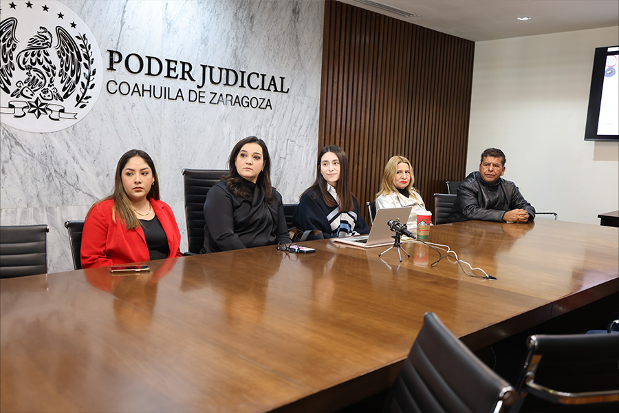
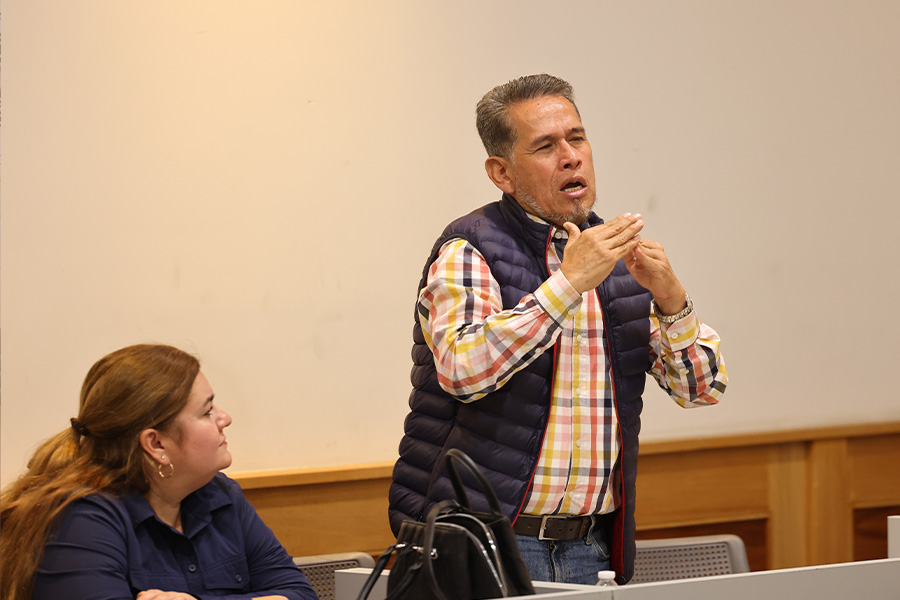
Entre estas acciones destaca el Acuerdo C-087/2025 del Consejo de la Judicatura, mediante el cual formalizamos la elaboración de sentencias en lectura fácil para personas con discapacidad intelectual, y la traducción de resoluciones al sistema de escritura braille para personas con discapacidad visual.
A la par, hicimos alianzas con la Escuela para Invidentes del Club de Leones de Saltillo y la Asociación Ver Contigo, en Torreón, para la impresión de documentos en Braille y asesoría en casos de personas con baja visión y discapacidad visual.
A su vez, reconociendo la importancia de la participación de las niñas y niños de nuestro estado, el Magistrado Presidente Miguel Felipe Mery Ayup hizo entrega del premio y reconocimiento a Natalia Cisneros Mireles, ganadora del Premio “Diseña Nuestro Personaje”. Justi nos acompaña ahora en nuestra misión por fomentar la cultura de la legalidad en las niñas, niños y adolescentes del estado.
En continuidad con estas acciones, tuvimos la segunda edición de la convocatoria Magistrada y Magistrado por un día. Este año seleccionamos a ocho niñas y cinco niños para formar parte del Pleno del Tribunal de Justicia del Estado de Coahuila de Zaragoza y participaran en la sesión del Pleno Infantil en las instalaciones del Palacio de Justicia en Saltillo.
También, con el objetivo de unificar criterios, mejorar la coordinación institucional y asegurar la protección emocional y el interés superior de la infancia en los procesos judiciales, llevamos a cabo conversatorios entre personas juzgadoras, personal del Centro de Evaluación Psicosocial, del Instituto Estatal de Defensoría Pública, del Sistema para el Desarrollo Integral de la Familia y Protección de los Derechos del Estado de Coahuila de Zaragoza (DIF Coahuila), de los Centros de Atención a la Infancia y a la Familia (CAIF), de la Procuraduría para Niños, Niñas y la Familia (PRONNIF), y de la Fiscalía Especializada para las Mujeres y la Niñez.
En conjunto colaboramos en mesas de trabajo en los distintos distritos judiciales para intercambiar experiencias y revisar temas como sensibilización parental, intervención terapéutica y convivencias familiares supervisadas.
En aras de mejorar la coordinación y cooperación entre instituciones, asistimos a reuniones con Mayra Lucila Valdés González, Secretaria de las Mujeres del Estado de Coahuila y la Diputada Luz Elena Morales Núñez, Presidenta de la Junta de Gobierno del Congreso del Estado de Coahuila de Zaragoza, siempre buscando articular acciones orientadas a impulsar el desarrollo personal de las mujeres en todos los ámbitos de su vida.
Como parte de las acciones establecidas año con año, en el mes de marzo, en conmemoración del Día Internacional de la Mujer, publicamos una serie de videos con mujeres trabajadoras del Poder Judicial de Coahuila que inspiran cada día y que acercan la justicia a la ciudadanía.
Asimismo, en el mes de octubre apoyamos la lucha contra el cáncer de mama, y a través de una campaña, invitamos a nuestro personal a portar una prenda rosa y tomarse una fotografía para compartir en redes sociales. Contamos con la participación de diversas áreas y se difundieron 205 fotos en las redes oficiales del Poder Judicial.
Finalmente, en conmemoración del Día Internacional de la Eliminación de la Violencia contra la Mujer, desarrollamos 16 días de activismo en nuestras redes sociales, promoviendo diariamente información sobre los distintos tipos de violencia, ejemplos de sentencias con perspectiva de género, recomendaciones de series y películas, así como contenido alusivo a la fecha. Con ello, buscamos sensibilizar a la ciudadanía sobre la importancia de erradicar esta problemática.
Recursos Humanos
En el Poder Judicial de Coahuila reconocemos que las personas que integran nuestra institución son el corazón de su funcionamiento, por lo que es fundamental generar condiciones laborales dignas para las y los servidores judiciales, con el fin de reconocer plenamente el valor y la importancia del trabajo que desempeñan en la impartición de justicia en el estado.
A lo largo de 2025, mediante la Dirección de Recursos Humanos trabajamos de manera constante para garantizar una gestión del personal que sea eficiente, equitativa y orientada a atender tanto las necesidades operativas de la institución como el bienestar de quienes forman parte de ella, garantizando así mayor estabilidad económica, permanencia en la Institución, así como bienestar emocional a fin de que cumplan su proyecto de vida.
Actualmente, la plantilla laboral del Poder Judicial está conformada por dos mil 043 servidoras y servidores públicos, de los cuales mil 330 son mujeres y 713 son hombres. Esta composición refleja un 65 por ciento de participación femenina y un 35 por ciento masculina, un indicador claro del compromiso institucional con la inclusión y la promoción de la igualdad de oportunidades en todos los niveles y áreas de trabajo.
Estos resultados evidencian que nuestra institución no solo busca cumplir con sus funciones de manera eficiente, sino también construir un entorno laboral equitativo, diverso y respetuoso, donde todas las personas puedan desarrollar su potencial y contribuir al fortalecimiento de la impartición de justicia.
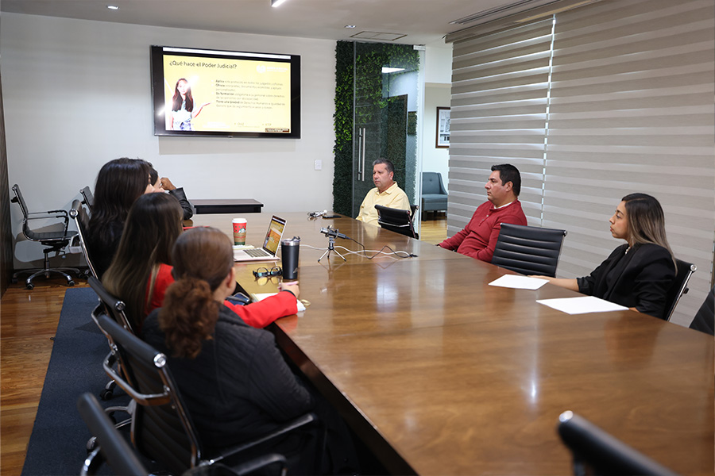
Movimientos de Personal
Durante el periodo que se informa, realizamos 830 movimientos de personal con el objetivo de garantizar que cada órgano jurisdiccional y área administrativa cuente con el personal idóneo para cumplir sus funciones de manera efectiva.
Estos movimientos incluyen la asignación de: un magistrado distrital, 30 jueces y juezas de primera instancia, 144 secretarios y secretarias, 76 actuarios y actuarias, 55 defensores y asesoras jurídicas, y 397 integrantes del personal administrativo sustantivo y de apoyo, distribuidos equitativamente entre hombres y mujeres.
Posteriormente, derivado de la Reforma Judicial realizamos la designación de: 13 magistradas y magistrados de Tribunal Superior, tres magistradas y magistrados de Tribunal de Disciplina Judicial, cuatro magistradas y magistrados de Tribunales Distritales, 107 personas juzgadoras de Primera Instancia.
Con estas acciones aseguramos que nuestra institución opere con la solidez y capacidad necesarias para atender a la ciudadanía con profesionalismo, fortaleciendo la estructura interna que permite ofrecer un servicio de justicia cercano, confiable y eficiente.
Tabla 49. Movimientos de personal
| Tipo de movimiento | Tipo de designación | Tipo de cargo | Número |
|---|---|---|---|
| Suplencias externas | Definitiva | Judicial y Administrativo | 288 |
| Suplencias externas | Interina sujeta a una temporalidad | Judicial y Administrativo | 17 |
| Suplencias externas | Interninas hasta en tanto se realie el debido proceso de selección | Judicial | 24 |
| Promoción | Interina sujeta a una temporalidad | Judicial y Administrativo | 20 |
| Promoción | Interninas hasta en tanto se realie el debido proceso de selección | Judicial | 137 |
| Promoción | Definitiva | Judicial | 22 |
| Promoción | Definitiva | Administrativo | 40 |
| Cambio de adscripción | Personal con cargo jurisdiccional | Judicial | 78 |
| Cambio de adscripción | Personal con cargo administrativo | Administrativo | 77 |
| Designación | Derivado de la Reforma Judicial | Magistradas y Magistrados TSJ | 13 |
| Designación | Derivado de la Reforma Judicial | Magistradas y Magistrados TDJ | 3 |
| Designación | Derivado de la Reforma Judicial | Magistradas y Matistrados de Tribunales Distritales | 4 |
| Designación | Derivado de la Reforma Judicial | Juezas y jueces de Primera Instancia | 107 |
Fuente. Dirección de Recursos Humanos de la Oficialía Mayor. Poder Judicial del Estado de Coahuila de Zaragoza. 2025.
Reestructuración de Órganos Jurisdiccionales, No Jurisdiccionales y Administrativos
Durante 2025, trabajamos de manera continua para contar con una estructura organizacional que responda oportuna y eficazmente a las exigencias de la impartición de justicia. Con esta visión, se realizaron ajustes y movimientos tanto en áreas jurisdiccionales como administrativas, orientados a fortalecer las funciones sustantivas de la institución y a mejorar la atención que se brinda a las personas usuarias.
Cada decisión se tomó bajo criterios de legalidad, eficiencia y responsabilidad institucional, priorizando el correcto funcionamiento de la institución.
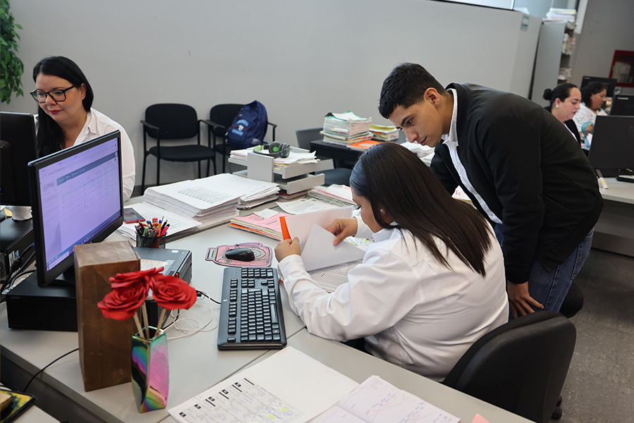
En el marco de nuestras acciones de fortalecimiento a la estructura organizacional asignamos al Instituto Estatal de Defensoría Pública: un subdirector de Desarrollo Institucional, cinco personas asesoras jurídicas, tres personas defensoras públicas, un perito, coordinadores de área y mejoramos las condiciones salariales de personal de nivel de subdirección, personas delegadas y personal técnico.
También, asignamos personal administrativo a los Tribunales Laborales y personal jurisdiccional y administrativo a los Juzgados Penales del Sistema Acusatorio y Oral en la entidad.
Al cierre del año que se informa, el Poder Judicial de Coahuila está integrado por una plantilla de dos mil 043 personas servidoras públicas. De este total, la gran mayoría, equivalente al 89 por ciento, desarrolla funciones directamente relacionadas con la labor jurisdiccional, mientras que el 11 por ciento restante desempeña tareas administrativas que resultan indispensables para el soporte y la operación del sistema judicial.
Esta composición refleja el compromiso institucional de colocar en el centro de su estructura a la función jurisdiccional, sin descuidar las áreas de apoyo que permiten una gestión ordenada, transparente y eficiente, para ofrecer un servicio de justicia profesional, de calidad y cercano.
Beneficios al Personal
Conscientes de que la labor profesional y dedicada de nuestro personal es fundamental para garantizar una impartición de justicia profesional, confiable, eficiente y de calidad, trabajamos para fortalecer un entorno laboral digno, responsable y cercano para ellos y sus familias.
Como parte de nuestras estrategias de apoyo, este año se autorizaron 397 préstamos personales a bajo interés por un monto superior a los 14.4 millones de pesos, con la facilidad de descuentos vía nómina, destinados a atender necesidades financieras de nuestro personal de manera ágil y accesible, promoviendo su estabilidad económica y la de sus familias.
De igual forma, continuamos facilitando el acceso a seguros de gastos médicos y de vida en condiciones preferenciales, garantizando que nuestras y nuestros colaboradores cuenten con protección integral y seguridad para ellos y sus seres queridos.